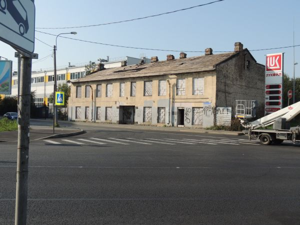

Навигация: Главная О нашем издательстве Главная О нашем издательстве
|
В Петербурге запустили первый легальный рынок украденных смартфонов.
20 апреля 2021, петербург, Дачное. Рядом с железнодорожной станцией Дачное, что недалеко от метро "Проспект Ветеранов" заработал первый легальный магазин по продаже украденных смартфонов.  В данном магазине можно абсолютно легально сдать, и купить краденый смартфон - но только на условии, что его не ищет владелец. Основателем стартапа стал Андрей Тюрипенко, глава одного из НИИ в Сколково, недавно переехавший в Петербург. В этом магазине, если вы сперли у кого-то телефон или смартфон - его можно анонимно сдать, и получить денежку. За счёт анонимности - стоимость небольшая, за незаблокированный "айфон" владелец магазина даст 100-200 рублей. За "звонилки" ещё меньше - около 30-50 рублей. Купить стоит уже больше - цены не отличаются от известных онлайн-досок объявлений, но на телефон здесь дадут гарантию, что его у вас не изымут и не заблокируют, а так же что телефон будет в хорошем и рабочем состоянии. Прекрасным моментом является то, что магазин позволяет легко вернуть украденный телефон. При наличии документов и чеков на ваше устройство - вам его вернут незамедлительно. Если документов нет - то тут сложнее, необходима копия заявления в полицию, где присутствуют свидетельские показания. Данная идея понравилась не только жителям Юго-Запада, но и местному отделу полиции. "Заявлений по кражам телефонов стало меньше в 11 раз из-за появления магазина" - комментирует ситуацию Сергей Полыньев, глава местного ОП. "После кражи телефона сначала идут в этот магазин. К нам - только если телефон там не нашли. Правда потом 70% заявлений закрываются, так как телефон воры всё же приносят в этот магазин". По сообщениям Андрея, выручки с лихвой хватает, чтоб покрыть возвраты телефонов. Идея настолько удачная, что Андрей собирается открывать и второй магазин - скорее всего, в Кудрово, где сохраняется высокая криминогенная обстановка. |